Recipe: ALCOVE and the six category structures
Source:vignettes/articles/recipe-alcove.Rmd
recipe-alcove.RmdThe tutorial partitioned a model with two parameters that runs in microseconds. Real models are rarely that kind. This recipe works through the analysis that introduced parameter space partitioning (Pitt, Kim, Navarro & Myung, 2006): ALCOVE, a model of how people learn categories, on six classic category-learning problems. It shows how to:
- wrap a model from another package for
pspGlobal(); - define ordinal patterns that allow ties, and why that choice decides whether the analysis is feasible;
- plan a run when every evaluation simulates a whole experiment, and save it so you only run it once;
- read a partition of four parameters, which you cannot simply plot;
- check that the conclusions survive reasonable changes to the analysis.
The six category structures
Shepard, Hovland and Jenkins (1961) built eight objects from three features with two values each, such as colour, size and shape. They split the eight objects into two categories of four, and asked people to learn which object belongs where. Up to relabelling the features, there are only six ways to make such a split, called Types I to VI. Each cube below is one type: its corners are the eight objects, coloured by category.
corners <- expand.grid(x3 = 0:1, x2 = 0:1, x1 = 0:1)[, 3:1]
category_a <- list(I = c("000", "001", "010", "011"), II = c("000", "001", "110", "111"),
III = c("000", "001", "010", "101"), IV = c("000", "001", "010", "100"),
V = c("000", "001", "010", "111"), VI = c("000", "011", "101", "110"))
project <- function(d) transform(d, px = x1 + 0.45 * x3, py = x2 + 0.35 * x3) # oblique view
cubes <- do.call(rbind, lapply(names(category_a), function(type) {
d <- project(corners)
d$type <- type
d$category <- ifelse(paste0(d$x1, d$x2, d$x3) %in% category_a[[type]], "A", "B")
d
}))
edges <- do.call(rbind, lapply(1:8, function(i) {
do.call(rbind, lapply(1:8, function(j) {
if (i < j && sum(abs(unlist(corners[i, ]) - unlist(corners[j, ]))) == 1) {
a <- project(corners[i, ]); b <- project(corners[j, ])
data.frame(x = a$px, y = a$py, xend = b$px, yend = b$py)
}
}))
}))
cubes$type <- factor(paste("Type", cubes$type), levels = paste("Type", names(category_a)))
ggplot(cubes, aes(px, py)) +
geom_segment(data = edges, aes(x = x, y = y, xend = xend, yend = yend), colour = "#ced4da", linewidth = 0.8) +
geom_point(aes(fill = category), shape = 21, size = 7, colour = "white", stroke = 1.2) +
facet_wrap(~type, nrow = 2) +
scale_fill_manual(values = c(A = "#2a78d6", B = "#eb6834"), name = "Category") +
scale_x_continuous(expand = expansion(add = 0.2)) +
scale_y_continuous(expand = expansion(add = 0.2)) +
coord_equal(clip = "off") +
labs(title = "The six category structures",
subtitle = "Each corner is an object with three binary features") +
theme_void(base_size = 14) +
theme(strip.text = element_text(face = "bold", size = 12, margin = margin(b = 10)),
legend.position = "bottom", plot.title.position = "plot",
plot.title = element_text(face = "bold"), plot.subtitle = element_text(colour = "#6c757d"),
panel.spacing = unit(2, "lines"), plot.margin = margin(8, 12, 8, 12))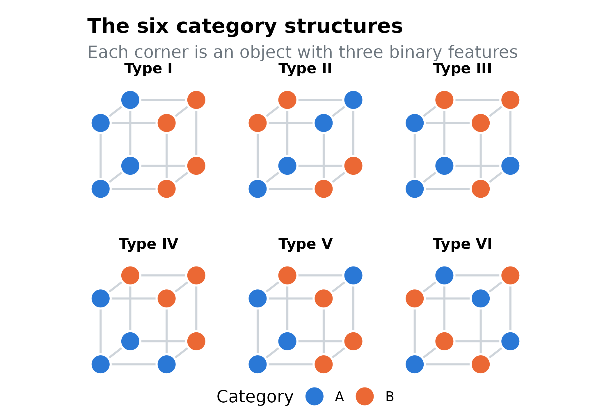
Type I depends on one feature only. Type II needs two features in combination. Type VI needs all three, with no simpler rule. People learn the types in a reliable order. Here are the error rates of people in Nosofsky, Gluck, Palmeri, McKinley and Glauthier’s (1994) replication, which ships with the catlearn package (Wills et al., 2025):
library(catlearn)
data(nosof94)
human_means <- tapply(nosof94$error, nosof94$type, mean)
nosof94$type_label <- factor(as.roman(nosof94$type), levels = names(type_colours))
ends <- subset(nosof94, block == 16)
ggplot(nosof94, aes(block, error, colour = type_label)) +
geom_line(linewidth = 1.1) +
geom_point(size = 1.8) +
scale_colour_manual(values = type_colours, name = "Type") +
scale_y_continuous(labels = scales::label_percent()) +
labs(x = "Training block (8 objects per block)", y = "Errors",
title = "Type I is learned fastest and Type VI slowest",
subtitle = "Nosofsky et al. (1994)")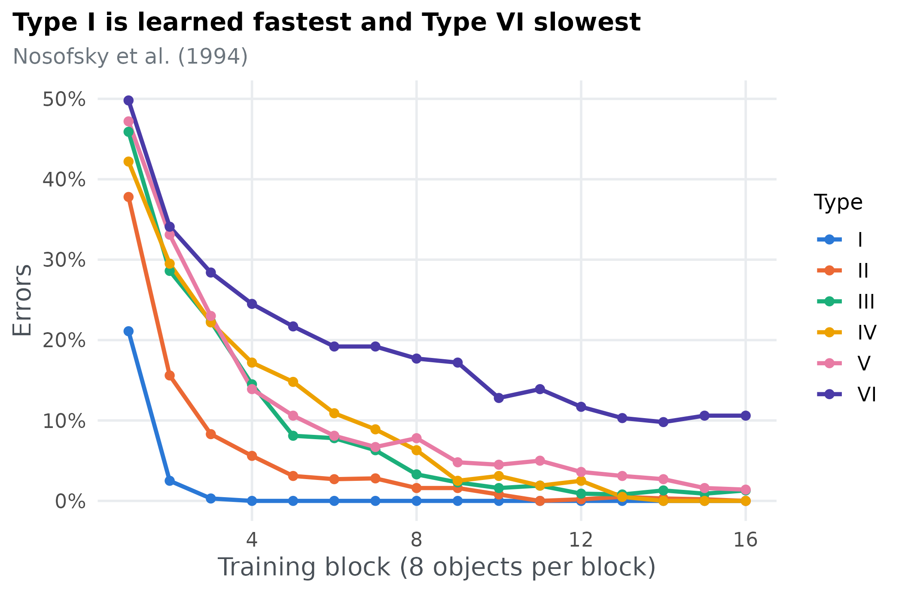
The qualitative finding is the ordering I < II < (III, IV, V) < VI: Types III, IV and V are about equally hard. Pitt et al. call this a weak order, an ordering that allows ties. The question for PSP: how many orderings of the six types can ALCOVE produce, and is this one of them?
The model
ALCOVE (Kruschke, 1992) learns categories by storing each object it sees as an exemplar and learning which category each exemplar points to. When an object with features x_i appears, each stored exemplar j, with features h_{ji}, responds according to how similar the object is to it:
a_j = \exp\Big(-c \sum_i \alpha_i \, |h_{ji} - x_i|\Big).
The specificity c sets how quickly similarity falls with distance, and the attention weights \alpha_i set how much each feature counts. Each category k collects evidence from the exemplars through association weights w_{kj},
o_k = \sum_j w_{kj} \, a_j,
and the model chooses category K with probability
P(K) = \frac{\exp(\phi \, o_K)}{\sum_k \exp(\phi \, o_k)},
where \phi sets how consistently it picks the category with more evidence. After feedback, ALCOVE learns by gradient descent on the error between o_k and a target t_k: the association weights change at rate \lambda_w and the attention weights at rate \lambda_a,
\Delta w_{kj} = \lambda_w (t_k - o_k)\, a_j, \qquad \Delta \alpha_i = -\lambda_a \sum_j \Big[\sum_k (t_k - o_k)\, w_{kj}\Big] a_j \, c \, |h_{ji} - x_i|.
The targets are “humble”: the model is only corrected when its evidence points the wrong way, or not far enough. Learning to attend to the features that matter is what lets ALCOVE learn Type II faster than Types III to V.
That leaves four free parameters. We use the ranges Pitt et al. (2006) used:
| Parameter | Meaning | Range |
|---|---|---|
| c | specificity: how fast similarity falls with distance | 0 to 20 |
| \phi | decision consistency | 0 to 6 |
| \lambda_w | learning rate of the association weights | 0 to 0.2 |
| \lambda_a | learning rate of attention | 0 to 0.2 |
Pitt et al. call the learning rates \eta_w and \eta_a. In catlearn they are lw
and la.
Step 1: wrap the model
catlearn implements ALCOVE as slpALCOVE(), which runs
the model through a sequence of training trials. The training sequence
is part of the experiment, not of the model, so we build it once,
outside the function pspGlobal() calls.
nosof94train() shuffles each block of eight objects; fixing
its seed fixes the order, so the model gives the same
answer every time it is called with the same parameters. Each simulated
learner gets its own order, and averaging over a few of them smooths out
the effect of any one order:
# the eight stimuli, three binary dimensions each
alcove_stimuli <- cbind(c(0, 0, 0), c(0, 0, 1), c(0, 1, 0), c(0, 1, 1),
c(1, 0, 0), c(1, 0, 1), c(1, 1, 0), c(1, 1, 1))
# one training sequence per problem type: 16 blocks of the 8 stimuli for each
# simulated learner, in an order fixed by `seed`
alcove_training <- function(learners = 5, seed = 7624) {
do.call(rbind, lapply(1:6, function(type) {
nosof94train(type, blocks = 16, absval = -1, subjs = learners, seed = seed)
}))
}pspGlobal() uses one radius for every
parameter, but c ranges over 0 to 20
and the learning rates over 0 to 0.2. A step that suits one would be far
too large or too small for the other. The fix is to let
pspGlobal() search the unit hypercube, [0, 1]^4, and stretch each coordinate onto
its parameter’s range inside the model:
# the four parameters, in the order pspGlobal() passes them, with the ranges
# Pitt, Kim, Navarro and Myung (2006) used; the lower bounds are kept above 0
# because slpALCOVE() rejects a learning rate of exactly 0
alcove_parameters <- data.frame(
name = c("c", "phi", "lw", "la"),
lower = c(0.01, 0.01, 0.001, 0.001),
upper = c(20, 6, 0.2, 0.2)
)
# pspGlobal() searches the unit hypercube, so a single radius suits every
# parameter; this maps a point of it onto ALCOVE's parameter ranges
to_alcove <- function(unit) {
setNames(alcove_parameters$lower + unit * (alcove_parameters$upper - alcove_parameters$lower),
alcove_parameters$name)
}The lower bounds are just above 0. Proposals beyond the bounds are
moved onto them, so the model really is evaluated at the bounds, and
slpALCOVE() stops with an error when a learning rate is
exactly 0. Make sure your model works at the edges of the space, not
just inside it.
The model function runs ALCOVE and returns the error rate of each type in each of the 16 blocks:
# returns the error rate of each problem type in each block: 6 x 16 values
alcove_curves <- function(unit, training) {
p <- to_alcove(unit)
state <- list(colskip = 4, r = 1, q = 1, alpha = rep(1 / 3, 3), w = array(0, dim = c(2, 8)),
h = alcove_stimuli, c = p[["c"]], phi = p[["phi"]], lw = p[["lw"]], la = p[["la"]])
prob <- slpALCOVE(state, training)$p
correct <- ifelse(training[, "t1"] == 1, prob[, 1], prob[, 2])
error <- tapply(1 - correct, list(block = training[, "blk"], type = training[, "cond"]), mean)
as.vector(error) # type I blocks 1-16, then type II, ...
}That is 96 numbers per evaluation, so responses = 96.
Returning the whole learning curves costs nothing extra, and with
save = TRUE they are all kept for later.
training <- alcove_training(learners = 5, seed = 7624)
model <- function(par) alcove_curves(par, training)Step 2: decide what counts as a different pattern
This decision matters more than any other. Pitt et al. define a pattern as the weak order of the six types by how hard they are, and with six types there are 4,683 possible weak orders: one with all types tied, 62 with two groups, up to 720 strict rankings.
Ties need a rule. Mean error rates are never exactly equal, so we have to say when two types count as equally hard. A first attempt compares every pair of types and calls them tied when their error rates are within 0.025. That fails badly: the ties need not be consistent (III can tie with IV, and IV with V, while III differs from V), so the patterns are not weak orders at all. In a pilot run, that definition produced 298 patterns within 20 iterations, still growing fast, and every iteration had to evaluate all of them.
Pitt et al. instead grouped the types with a clustering method (Kontkanen et al., 2005), which always yields a proper weak order. We use a simpler rule with the same guarantee: sort the six error rates, and start a new group wherever the gap to the next type is larger than 0.025.
# the weak order of the six types by mean error: sort them, and start a new
# group wherever the gap to the next type is larger than `gap`. Returns the
# 6 x 6 matrix of group comparisons (1: row type is harder than column type)
weak_order <- function(curves, gap = 0.025) {
error <- colMeans(matrix(curves, nrow = 16))
sorted <- order(error)
group <- integer(6)
group[sorted] <- cumsum(c(1, diff(error[sorted]) > gap))
sign(outer(group, group, "-"))
}
# writes a weak order the usual way, easiest first: "I < II < (III, IV, V) < VI"
describe_order <- function(pattern) {
types <- c("I", "II", "III", "IV", "V", "VI")
rank <- rowSums(pattern > 0) # how many types each type is harder than
groups <- split(types, rank)
groups <- groups[order(as.numeric(names(groups)))]
paste(sapply(groups, function(g) if (length(g) > 1) paste0("(", paste(g, collapse = ", "), ")") else g),
collapse = " < ")
}Applied to the human data, it recovers the classic ordering:
human_curves <- nosof94$error[order(nosof94$type, nosof94$block)]
human <- describe_order(weak_order(human_curves))
human
#> [1] "I < II < (III, IV, V) < VI"weak_order() returns a 6 × 6 matrix, which is what
pspGlobal() needs from discretize, and
describe_order() writes it in the usual notation:
discretize <- function(curves) weak_order(curves, gap = 0.025)The threshold 0.025 is a choice, so the robustness check at the end repeats the analysis with other values.
Step 3: plan the run
Before a long run, time one evaluation:
one_evaluation <- system.time(model(rep(0.5, 4)))[["elapsed"]]
one_evaluation
#> [1] 0.08Each evaluation simulates 30 learners working through 16 blocks,
about 0.08 seconds here. The cost of a run is roughly the number of
patterns times population times that, plus the evaluations
that land in patterns that are already full. Patterns are unknown before
you search, so a short pilot run is the best estimate: with
population = 20 and 400 iterations, ours found 37 patterns
in 3,607 evaluations and took about four minutes.
The full run used population = 50 and 20 random starting
points:
set.seed(2026)
control <- list(
lower = rep(0, 4), upper = rep(1, 4),
init = matrix(runif(4 * 20), ncol = 4),
radius = 0.15,
population = 50,
iterations = 2000,
parameter_names = alcove_parameters$name,
stimuli_names = paste0(rep(c("I", "II", "III", "IV", "V", "VI"), each = 16), "_", rep(1:16, 6)),
dimensionality = 6,
responses = 96
)
result <- pspGlobal(model, discretize, control, save = TRUE, path = "alcove", quiet = TRUE)It took 9 minutes for 10,587 evaluations. It ran to the cap of 2,000
iterations: a few rare patterns never reached a population of 50, a
reminder that tiny regions fill slowly. Run something that long once,
outside the document that reports it, and save what you need. The script
that ran this analysis is run-alcove.R;
it keeps each evaluation’s parameters, the mean error of each type and
its weak order, and this recipe reads that file.
Step 4: read the results
run <- read_result("psp-run.csv.gz")
uniform <- read_result("uniform.csv.gz")
found <- unique(run$order)
length(found)
#> [1] 41
human %in% found
#> [1] TRUEALCOVE produced 41 of the 4,683 possible weak orders, about 0.9%, and the human ordering is one of them. Pitt et al. found between 32 and 122 patterns per run with their clustering rule, so the picture is similar: ALCOVE is far from able to produce any ordering at all.
How much of the space produces each pattern?
The parameter sets PSP records are not an even sample of the space:
every pattern is sampled until it is full, however small its region. To
compare region sizes, run-alcove.R also evaluated ALCOVE at
4,000 parameter sets spread evenly over the space:
share <- sort(table(uniform$order) / nrow(uniform), decreasing = TRUE)
top <- data.frame(order = names(share), share = as.numeric(share))[1:12, ]
top$order <- factor(top$order, levels = rev(top$order))
ggplot(top, aes(share, order, fill = order == human)) +
geom_col(width = 0.65) +
geom_text(aes(label = pct(share, 1)), hjust = -0.15, size = 4) +
scale_fill_manual(values = c(`TRUE` = blue, `FALSE` = grey), guide = "none") +
scale_x_continuous(labels = scales::label_percent(), expand = expansion(mult = c(0, 0.15))) +
labs(x = "Share of the parameter space", y = NULL,
title = "The twelve most common orderings, human ordering in blue",
subtitle = paste(num(nrow(uniform)), "evenly spread parameter sets")) +
theme(axis.text.y = element_text(family = "mono", size = 11))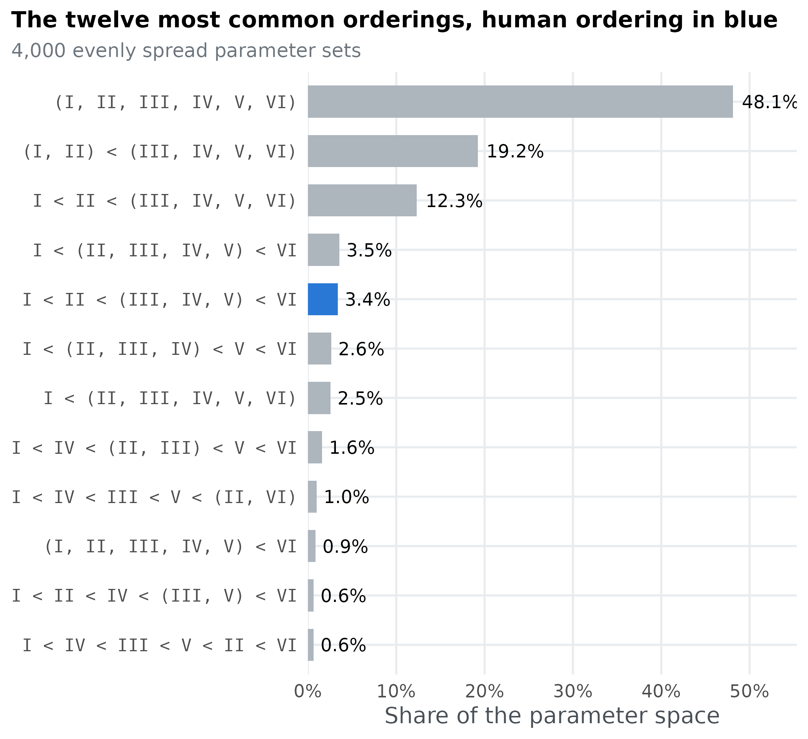
The most common outcome, (I, II, III, IV, V, VI), covers 48% of the space: parameter values where ALCOVE finds all six types equally hard. Mostly that is because it learns them all quickly. 66% of these parameter sets average under 5% errors, and only 8% stay near chance. It happens most at high specificity c, where each stored exemplar responds almost only to itself. ALCOVE then memorises the eight objects one by one, and the structure of the categories stops mattering. The human ordering covers 3.4% of the space and is the 5. most common ordering. The rest of the 33 orderings in the even sample share what remains, many of them in very small regions.
Why not estimate volumes the way Pitt et al. did?
Pitt et al. (2006, Appendix B) estimated each region’s volume differently. They ran a Markov chain inside every region, whose target is uniform on that region, so that its samples spread evenly over it. They fit an ellipsoid to each chain from its mean and covariance matrix \mathbf{S}, and corrected the ellipsoid’s volume by hit-or-miss Monte Carlo: draw n points evenly inside the ellipsoid, run the model on each, and count the k that produce the region’s pattern. In d dimensions, with V_d the volume of a ball of radius 1,
V_R = \frac{k}{n}\, V_d\,(d + 2)^{d/2}\,|\mathbf{S}|^{1/2}.
The volume stage of run-alcove.R implements
this: a Metropolis chain of 600 steps in each region, tuned to the 20%
to 25% acceptance rate Pitt et al. recommend, followed by 200
hit-or-miss points. On ALCOVE it does not give usable volumes:
volumes <- read_result("volumes.csv")
volumes$even <- as.numeric(table(factor(uniform$order, levels = volumes$order)) / nrow(uniform))
compared <- subset(volumes, !is.na(volume) & volume > 0 & even > 0)
ggplot(compared, aes(even, volume)) +
geom_abline(slope = 1, intercept = 0, colour = grey, linewidth = 0.6) +
geom_point(aes(fill = order == human), shape = 21, size = 3.6, colour = "white", stroke = 0.8) +
geom_label(data = subset(compared, order %in% c(human, names(share)[1])), aes(label = order),
family = "mono", size = 3.4, hjust = 1.05, vjust = -0.6, label.size = 0, fill = "white") +
scale_fill_manual(values = c(`TRUE` = blue, `FALSE` = "#6c757d"), guide = "none") +
scale_x_log10(labels = function(x) paste0(signif(100 * x, 1), "%")) +
scale_y_log10(labels = function(x) paste0(signif(100 * x, 1), "%")) +
labs(x = "Share of the space, even sample", y = "Share of the space, chains and ellipsoids",
title = "Short chains badly underestimate large regions",
subtitle = "One point per ordering; on the grey line, the two estimates agree")
#> Warning: The `label.size` argument of `geom_label()` is deprecated as of ggplot2 3.5.0.
#> ℹ Please use the `linewidth` argument instead.
#> This warning is displayed once per session.
#> Call `lifecycle::last_lifecycle_warnings()` to see where this warning was
#> generated.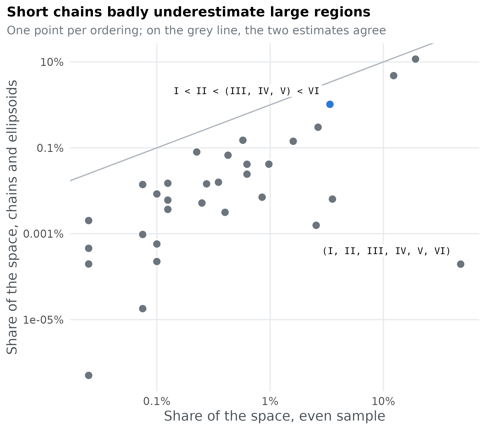
The regions’ volumes should add up to the whole space, but these add up to 18% of it. The largest region, (I, II, III, IV, V, VI), comes out about 250,000 times smaller than the even sample says. Two things go wrong. A chain of a few hundred steps, each small enough to be accepted a fifth of the time, only explores a patch of a large region, so its ellipsoid is far too small; Pitt et al. used 60,000 samples per region, which for ALCOVE would take about 34 hours. And the method assumes every pattern occupies one connected region, while all-tied learning comes in two separate parts, fast learners and learners who hardly learn at all. An ellipsoid fitted around both would mostly cover other orderings.
The even sample has neither problem: it needs no assumption about the shape of a region, and its error shrinks with the number of points. Its weakness is that it cannot size a region too small to be hit at all, so for a model with very small regions that matter, long chains would be worth their cost.
What the patterns look like
An ordering is easier to judge when you can see the error rates behind it. Each panel shows the mean error of each type for the parameter sets in one of the most common orderings, one line per parameter set:
shown <- names(share)[1:6]
shapes <- do.call(rbind, lapply(shown, function(o) {
d <- run[run$order == o, error_cols]
d <- d[seq_len(min(60, nrow(d))), ]
data.frame(order = o, set = rep(seq_len(nrow(d)), 6),
type = factor(rep(names(type_colours), each = nrow(d)), levels = names(type_colours)),
error = unlist(d, use.names = FALSE))
}))
shapes$order <- factor(shapes$order, levels = shown)
ggplot(shapes, aes(type, error, group = set)) +
geom_line(colour = blue, alpha = 0.25) +
facet_wrap(~order, ncol = 2) +
scale_y_continuous(labels = scales::label_percent()) +
labs(x = "Type", y = "Mean error",
title = "Mean error by type in the six most common orderings",
subtitle = "Each line is one parameter set from the PSP run") +
theme(strip.text = element_text(family = "mono", size = 10.5))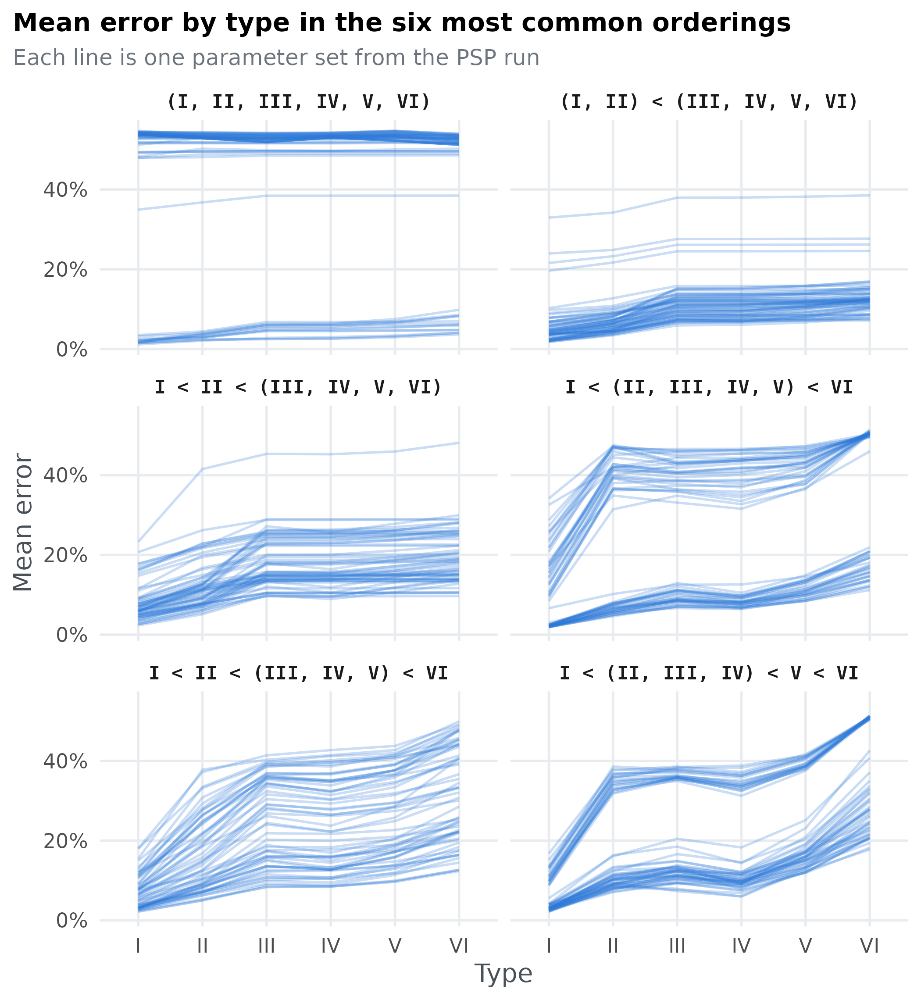
Where the human ordering lives
With four parameters there is no single map to draw. One useful view is how often each parameter’s values produce the human ordering. Split each parameter’s range into ten bins and, within each bin, take the share of the even sample that gives the human ordering:
labels <- c(c = "c (specificity)", phi = "φ (decision consistency)",
lw = "λw (association learning)", la = "λa (attention learning)")
by_parameter <- do.call(rbind, lapply(names(labels), function(p) {
edges <- seq(min(uniform[[p]]), max(uniform[[p]]), length.out = 11)
bin <- cut(uniform[[p]], edges, include.lowest = TRUE)
data.frame(parameter = labels[[p]], value = (head(edges, -1) + edges[-1]) / 2,
share = as.numeric(tapply(uniform$order == human, bin, mean)))
}))
by_parameter$parameter <- factor(by_parameter$parameter, levels = labels)
ggplot(by_parameter, aes(value, share)) +
geom_hline(yintercept = mean(uniform$order == human), colour = grey, linewidth = 0.6) +
geom_line(colour = blue, linewidth = 1.1) +
geom_point(colour = blue, size = 2.4) +
facet_wrap(~parameter, scales = "free_x", ncol = 2) +
scale_y_continuous(labels = scales::label_percent()) +
labs(x = NULL, y = "Parameter sets giving the human ordering",
title = "Which parameter values produce the human ordering?",
subtitle = "The grey line is the average over the whole space")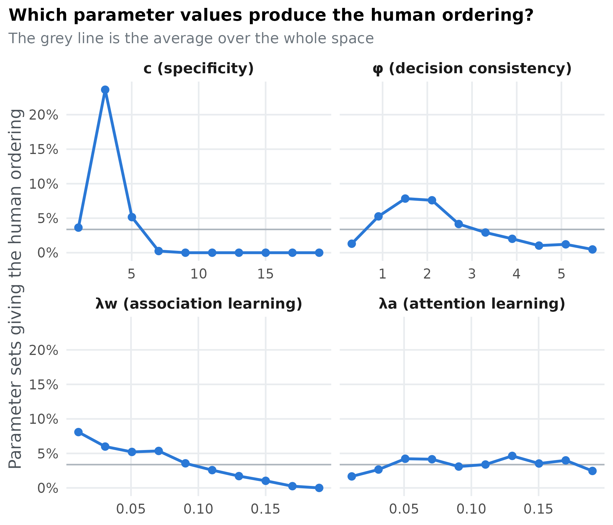
A line far above the grey average marks values where the human ordering is common, and a flat line a parameter that hardly matters for it. Specificity c decides most: the human ordering comes from 10.8% of parameter sets with c \le 6 but 0.0% of those with c > 8. At high specificity ALCOVE memorises objects one by one, as above, and loses the differences between the types. The human ordering is also more common when association learning is slow. The attention learning rate hardly matters within the range Pitt et al. used, up to 0.2. catlearn’s own best fit to these data has an attention learning rate near 1, well outside that range: conclusions about a parameter only hold for the range you searched.
Ordinal patterns as overlapping relations
An ordering of six types is several qualitative claims at once. The human ordering, I < II < (III, IV, V) < VI, says four things:
- Type I is easier than Type II.
- Type II is easier than Types III, IV and V.
- Types III, IV and V are tied.
- Type VI is the hardest.
Each claim holds in part of the parameter space, and the human
ordering is where all four overlap. Using the same groups as
weak_order(), we can check each claim for every parameter
set in the even sample:
relations <- t(apply(uniform[, error_cols], 1, function(e) {
pattern <- weak_order(rep(e, each = 16))
group <- rowSums(pattern > 0) # 0 for the easiest group, 1 for the next, ...
c(`I easier than II` = group[1] < group[2],
`II easier than III-V` = group[2] < min(group[3:5]),
`III, IV and V tied` = length(unique(group[3:5])) == 1,
`VI hardest` = group[6] > max(group[1:5]))
}))
colMeans(relations)
#> I easier than II II easier than III-V III, IV and V tied
#> 0.31750 0.36375 0.90175
#> VI hardest
#> 0.16250An UpSet chart shows how the claims overlap. Each column is one combination of claims, marked by the filled dots below it, and the bar above it is the share of the parameter space where exactly that combination holds:
combo <- apply(relations, 1, function(r) paste(as.integer(r), collapse = ""))
sizes <- sort(table(combo) / nrow(relations), decreasing = TRUE)
sizes <- sizes[seq_len(min(12, length(sizes)))]
columns <- factor(names(sizes), levels = names(sizes))
all_four <- paste(rep(1, ncol(relations)), collapse = "")
bars <- data.frame(column = columns, value = as.numeric(sizes), human = names(sizes) == all_four,
panel = "Share of the parameter space")
dots <- do.call(rbind, lapply(names(sizes), function(k) {
data.frame(column = factor(k, levels = names(sizes)),
relation = factor(colnames(relations), levels = rev(colnames(relations))),
holds = strsplit(k, "")[[1]] == "1", human = k == all_four)
}))
ggplot() +
geom_col(data = bars, aes(column, value, fill = human), width = 0.6) +
geom_text(data = bars, aes(column, value, label = ifelse(value < 0.001, "<0.1%", pct(value, 1))), vjust = -0.4, size = 3.6) +
scale_fill_manual(values = c(`TRUE` = blue, `FALSE` = grey), guide = "none") +
scale_x_discrete(labels = NULL) +
scale_y_continuous(labels = scales::label_percent(), expand = expansion(mult = c(0, 0.15))) +
labs(x = NULL, y = "Share of the space",
title = "Where the four claims of the human ordering hold",
subtitle = "Each column is one combination of claims; the human ordering (blue) needs all four") +
theme(panel.grid.major.x = element_blank(), axis.ticks = element_blank()) -> top
bottom <- ggplot(dots, aes(column, relation)) +
geom_line(data = subset(dots, holds), aes(group = column), colour = "#495057", linewidth = 0.8) +
geom_point(aes(colour = interaction(holds, human)), size = 4.2) +
scale_colour_manual(values = c(FALSE.FALSE = "#e9ecef", TRUE.FALSE = "#495057",
FALSE.TRUE = "#e9ecef", TRUE.TRUE = blue), guide = "none") +
scale_x_discrete(labels = NULL) +
labs(x = NULL, y = NULL) +
theme(panel.grid = element_blank(), axis.ticks = element_blank(),
axis.text.y = element_text(size = 12))
grid::grid.newpage()
grid::grid.draw(rbind(ggplotGrob(top), ggplotGrob(bottom), size = "max"))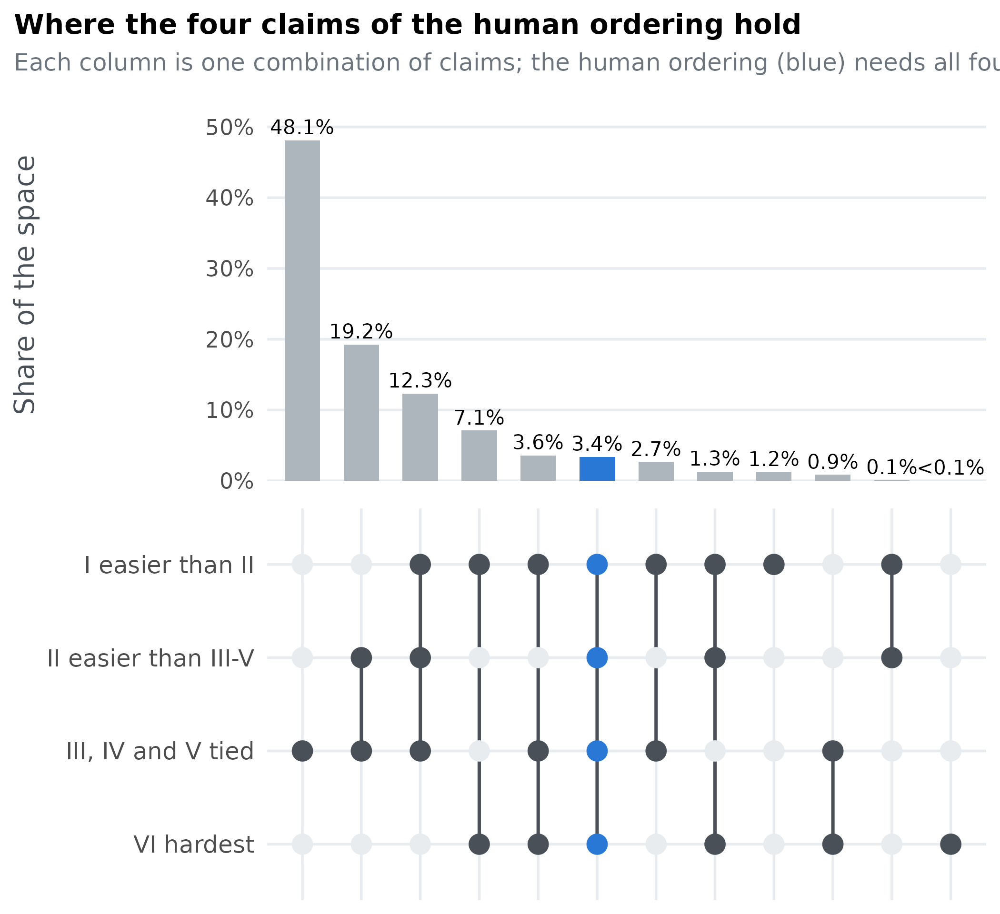
On its own, each claim holds in between 16% and 90% of the space. The rarest is Type VI being the hardest, in 16%. The four together hold in only 3.4% of it, the human ordering’s share. Another 17.2% of the space gets three of the four claims right. That is how a model can look close to the data in most of its parameter space and still produce the exact pattern only rarely, and why the definition of a pattern decides the answer.
What else the partition tells you
Pitt et al. (2006) went beyond counting patterns and measuring their regions. This section shows two further analyses of the same saved results, and a way to project a four-parameter partition onto a flat page.
Did the search level off?
The saved run lists every evaluation in order, so we can count how many distinct patterns the search had found after each number of evaluations. A curve that flattens early suggests the search found most of what it could; one still climbing at the end suggests more patterns remain.
discovery <- data.frame(evaluations = seq_len(nrow(run)), patterns = cumsum(!duplicated(run$order)))
last_new <- max(which(!duplicated(run$order)))
ggplot(discovery, aes(evaluations, patterns)) +
geom_step(colour = blue, linewidth = 1.1) +
geom_vline(xintercept = last_new, colour = grey, linewidth = 0.6) +
annotate("text", x = last_new, y = 4, label = paste0("last new pattern\nafter ", num(last_new), " evaluations"),
hjust = -0.05, size = 3.8, colour = "#495057") +
scale_x_continuous(labels = scales::label_comma()) +
labs(x = "Model evaluations", y = "Distinct orderings found",
title = "The search finds most orderings early",
subtitle = "Cumulative count over the main PSP run")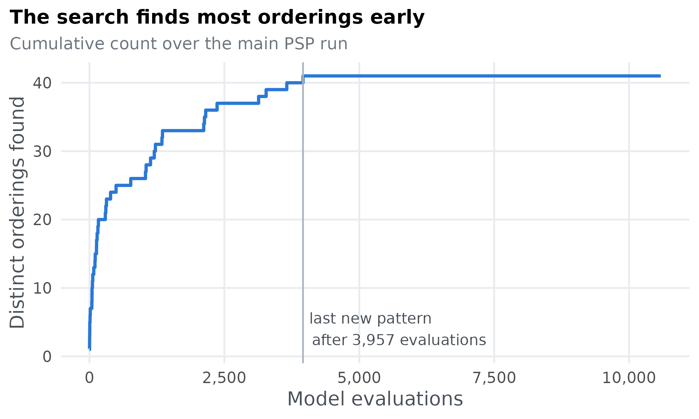
The last new ordering appeared after 3,957 of the 10,587 evaluations. The rest of the run filled the regions it had already found.
Which types does ALCOVE find harder?
Pitt et al. summarised all of ALCOVE’s orderings by the average rank of each type: 1 for the easiest group, with tied types sharing the average of their ranks. If the ranks rise from Type I to Type VI, the model’s orderings preserve the main trend in the data even when they differ in detail. We compute it two ways: counting every ordering the search found once, and weighting each ordering by its share of the parameter space.
type_ranks <- function(errors) {
group <- rowSums(weak_order(rep(errors, each = 16)) > 0)
rank(group, ties.method = "average")
}
representative <- run[!duplicated(run$order), ]
by_pattern <- t(apply(representative[, error_cols], 1, type_ranks))
by_volume <- t(apply(uniform[, error_cols], 1, type_ranks))
ranks <- rbind(
data.frame(type = names(type_colours), rank = colMeans(by_pattern), weighting = "each ordering counted once"),
data.frame(type = names(type_colours), rank = colMeans(by_volume), weighting = "weighted by share of the space")
)
ranks$type <- factor(ranks$type, levels = names(type_colours))
ggplot(ranks, aes(type, rank, colour = weighting, group = weighting)) +
geom_line(linewidth = 1.1) +
geom_point(size = 3) +
scale_colour_manual(values = c(blue, "#eb6834"), name = NULL) +
scale_y_continuous(limits = c(1, 6), breaks = 1:6) +
labs(x = "Type", y = "Mean rank (1 = easiest)",
title = "Across its orderings, ALCOVE keeps Type I easy and Type VI hard") +
theme(legend.position = "bottom")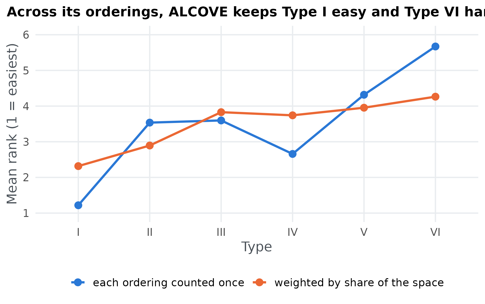
Overall, both lines rise from Type I to Type VI: across its orderings, ALCOVE keeps Type I easy and Type VI hard, as people do. The exception is Type IV. Counting each ordering once, Type IV ranks easier than Types II and III, because many of ALCOVE’s rarer orderings put it near the easy end. Weighted by region size, the line is flatter, because the most common outcome, all six types tied, gives every type the same rank.
The parameter sets in two dimensions
A partition of four parameters can be flattened onto the two directions that best separate its patterns. Linear discriminant analysis (LDA) finds them: put every parameter on the same 0 to 1 scale, and look for the combinations of parameters along which the orderings differ most, relative to how much they vary within themselves. Each evaluated parameter set is then plotted along those two combinations, and the arrows show how much each parameter contributes to them.
scaled <- sweep(sweep(as.matrix(run[, alcove_parameters$name]), 2, alcove_parameters$lower), 2,
alcove_parameters$upper - alcove_parameters$lower, "/")
colnames(scaled) <- alcove_parameters$name
keep <- run$order %in% common
discriminant <- MASS::lda(scaled[keep, ], grouping = run$order[keep])
projected <- data.frame(predict(discriminant)$x[, 1:2], order = factor(run$order[keep], levels = common))
separation <- discriminant$svd^2 / sum(discriminant$svd^2)
loadings <- discriminant$scaling[, 1:2]
loadings <- loadings / max(abs(loadings)) * 0.8 * max(abs(projected$LD1), abs(projected$LD2))
arrows <- data.frame(loadings, parameter = short[rownames(loadings)])
ggplot(projected, aes(LD1, LD2)) +
geom_point(aes(colour = order), size = 1.1, alpha = 0.55) +
geom_segment(data = arrows, aes(x = 0, y = 0, xend = LD1, yend = LD2),
arrow = grid::arrow(length = grid::unit(0.25, "cm")), linewidth = 0.9) +
geom_label(data = arrows, aes(LD1 * 1.12, LD2 * 1.12, label = parameter), size = 4.6, label.size = 0) +
scale_colour_manual(values = map_colours[common], name = NULL) +
guides(colour = guide_legend(ncol = 2, override.aes = list(size = 4, alpha = 1))) +
labs(x = paste0("First discriminant (", pct(separation[1]), " of the separation)"),
y = paste0("Second discriminant (", pct(separation[2]), ")"),
title = "The six most common orderings, separated in two dimensions",
subtitle = "Each point is one parameter set from the PSP run") +
theme(legend.position = "bottom", legend.text = element_text(family = "mono", size = 10.5))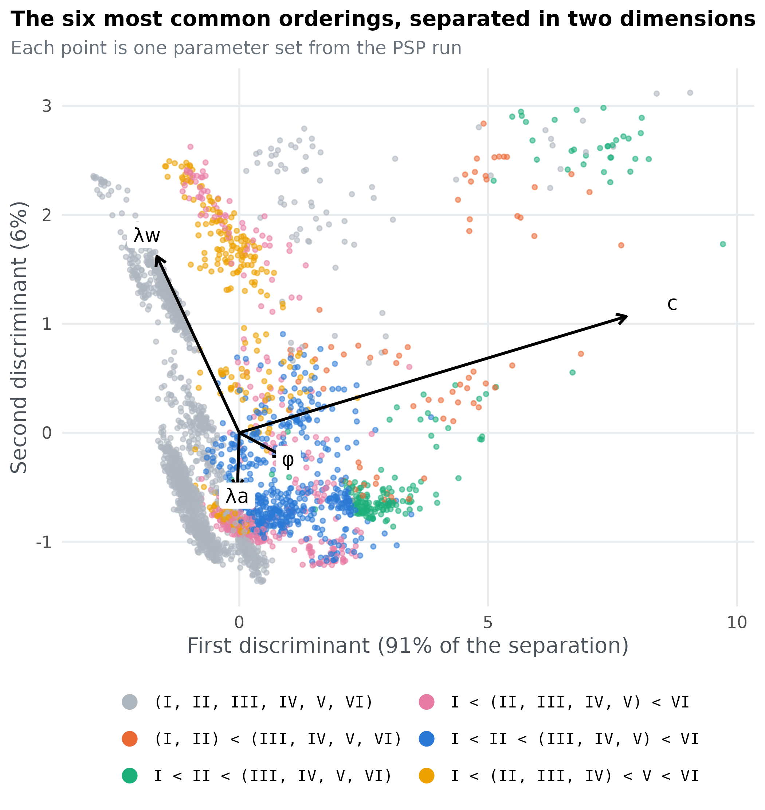
Orderings that form separate clouds occupy different parts of the parameter space, and the arrows show which parameters separate them: the longer the arrow, the more that parameter matters for telling the orderings apart. The projection is linear, so orderings whose regions curve around each other can still overlap in it.
Step 5: check that the conclusions hold
Every PSP analysis rests on choices that could have been made
differently. Pitt et al. recommend trying a few and checking whether the
conclusions change. run-alcove.R repeats parts of the
analysis in three ways.
Other trial orders
ALCOVE’s predictions depend a little on the order of the training trials, which is why Pitt et al. ran PSP on 20 different orders. We repeated the full PSP run with four more:
orders <- read_result("trial-orders.csv")
orders <- rbind(data.frame(trial_order = 7624, order = found), orders[, c("trial_order", "order")])
runs <- length(unique(orders$trial_order))
times_found <- table(orders$order)
universal <- names(times_found)[times_found == runs]
grid <- expand.grid(order = names(times_found), trial_order = unique(orders$trial_order),
stringsAsFactors = FALSE)
grid$found <- paste(grid$order, grid$trial_order) %in% paste(orders$order, orders$trial_order)
level <- names(sort(times_found + (names(times_found) == human) * 0.5))
grid$order <- factor(grid$order, levels = level)
grid$trial_order <- factor(grid$trial_order, levels = unique(orders$trial_order),
labels = c("main run", paste("order", 2:runs)))
shown <- level
ggplot(grid[grid$order %in% shown, ], aes(trial_order, order, fill = found)) +
geom_tile(colour = "white", linewidth = 1) +
scale_fill_manual(values = c(`TRUE` = blue, `FALSE` = "#e9ecef"),
labels = c(`TRUE` = "found", `FALSE` = "not found"), name = NULL) +
scale_x_discrete(position = "top") +
labs(x = NULL, y = NULL, title = "Which orderings each run found",
subtitle = paste("All", length(shown), "orderings found with", runs, "trial orders, most often found at the top")) +
theme(panel.grid = element_blank(), axis.ticks = element_blank(), legend.position = "bottom",
axis.text.y = element_text(family = "mono", size = 8.5,
face = ifelse(shown == human, "bold", "plain")))
#> Warning: Vectorized input to `element_text()` is not officially supported.
#> ℹ Results may be unexpected or may change in future versions of ggplot2.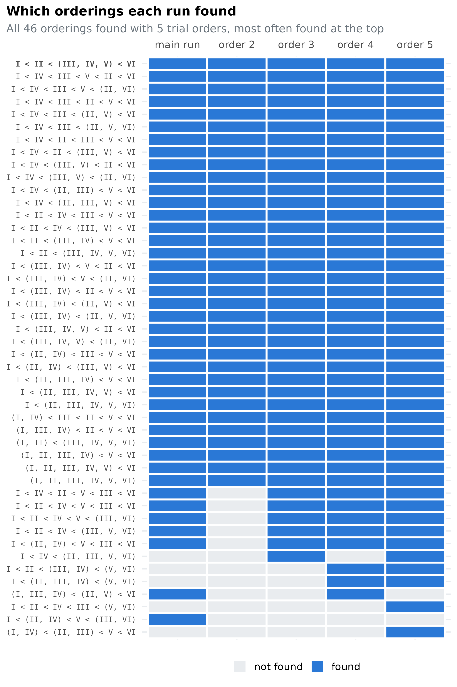
The runs found between 34 and 44 orderings each, and 46 different orderings across all 5. 34 of them were found in every run, and the human ordering is one of them. Pitt et al. report the same kind of picture: a stable core of orderings that ALCOVE produces whatever the trial order (17 in their analysis), and a fringe of rarer orderings that depend on it.
Another threshold for ties
The gap of 0.025 decides which types count as tied. Applying
weak_order() with other gaps to the evenly spread sample
shows how much that choice matters. Only the mean errors are needed, so
nothing has to be run again:
regroup <- function(gap) {
apply(uniform[, error_cols], 1, function(e) describe_order(weak_order(rep(e, each = 16), gap = gap)))
}
gaps <- c(0.015, 0.025, 0.035)
sensitivity <- do.call(rbind, lapply(gaps, function(g) {
orders_g <- regroup(g)
human_g <- describe_order(weak_order(human_curves, gap = g))
data.frame(gap = g, human_ordering = human_g, orderings_found = length(unique(orders_g)),
share_human = pct(mean(orders_g == human_g), 1))
}))
sensitivity
#> gap human_ordering orderings_found share_human
#> 1 0.015 I < II < (III, IV, V) < VI 37 4.8%
#> 2 0.025 I < II < (III, IV, V) < VI 33 3.4%
#> 3 0.035 I < II < (III, IV, V) < VI 28 1.9%The human data give the same ordering with every gap, so the target of the analysis does not change. A smaller gap separates more types and produces more orderings; a larger gap merges more and produces fewer. The question to ask is whether the human ordering stays one of ALCOVE’s orderings and keeps a share of the space of the same size. Here, the human ordering covers 4.8%, 3.4%, 1.9% of the space with gaps of 0.015, 0.025, 0.035.
More simulated learners
Each evaluation averaged over only 5 simulated learners per type, to keep the run affordable. Re-evaluating 500 of the evenly spread parameter sets with 20 learners shows whether that changed the answers:
learners <- read_result("learners.csv")
c(same_ordering = mean(learners$learners_5 == learners$learners_20),
human_with_5 = mean(learners$learners_5 == human),
human_with_20 = mean(learners$learners_20 == human))
#> same_ordering human_with_5 human_with_20
#> 0.986 0.042 0.042With 20 learners, 98.6% of the parameter sets keep the same ordering. The ones that change sit on the edge of a tie: their closest gap between two types is a median of 0.0006 away from the 0.025 threshold, against 0.0099 for the rest, so a little averaging noise tips them across it. The share of the human ordering is the same with 5 and with 20 learners, so the conclusions do not depend on the small number of simulated learners.
What we learned
- ALCOVE produces 41 of the 4,683 possible orderings of the six types, so it is far from able to fit any ordering.
- The ordering people show is one of them, and it covers 3.4% of the parameter space.
- The single most common outcome is that all six types are learned equally well, mostly because ALCOVE memorises every object when its specificity c is high. The human ordering needs low specificity.
- The human ordering is found with every trial order, and the conclusions hold for other thresholds for ties and for more simulated learners.
The steps carry over to any slow model: wrap it so one radius suits every parameter, define patterns that answer your question and can be counted, pilot before you run, save the run, summarise the partition parameter by parameter, and check the conclusions against the choices you made along the way.
References
Kontkanen, P., Myllymäki, P., Buntine, W., Rissanen, J., & Tirri, H. (2005). An MDL framework for data clustering. In P. Grünwald, I. J. Myung, & M. A. Pitt (Eds.), Advances in minimum description length: Theory and applications (pp. 323–354). MIT Press. https://doi.org/10.7551/mitpress/1114.003.0018
Kruschke, J. K. (1992). ALCOVE: An exemplar-based connectionist model of category learning. Psychological Review, 99(1), 22–44. https://doi.org/10.1037/0033-295X.99.1.22
Nosofsky, R. M., Gluck, M. A., Palmeri, T. J., McKinley, S. C., & Glauthier, P. (1994). Comparing models of rule-based classification learning: A replication and extension of Shepard, Hovland, and Jenkins (1961). Memory & Cognition, 22(3), 352–369. https://doi.org/10.3758/BF03200862
Pitt, M. A., Kim, W., Navarro, D. J., & Myung, J. I. (2006). Global model analysis by parameter space partitioning. Psychological Review, 113(1), 57–83. https://doi.org/10.1037/0033-295X.113.1.57
Shepard, R. N., Hovland, C. I., & Jenkins, H. M. (1961). Learning and memorization of classifications. Psychological Monographs: General and Applied, 75(13), 1–42. https://doi.org/10.1037/h0093825
Wills, A. J., Dome, L., Edmunds, C., Honke, G., Inkster, A., Schlegelmilch, R., & Spicer, S. (2025). catlearn: Formal psychological models of categorization and learning (R package version 1.1). https://doi.org/10.32614/CRAN.package.catlearn